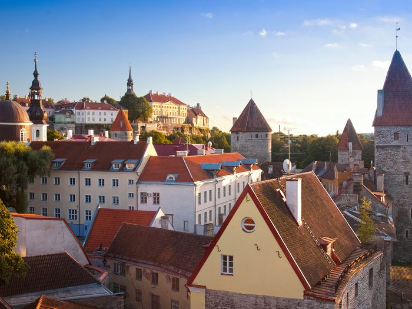
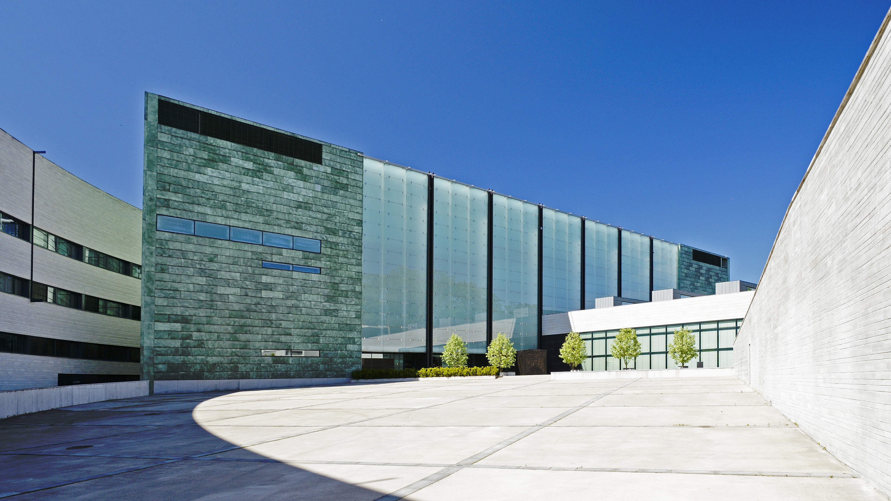
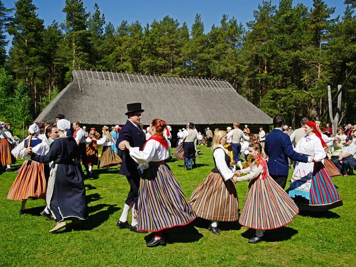

Tallinn
Discover the Magic of Tallinn

Discover the Magic of Tallinn
Tallinn is one of Europe’s best-preserved medieval cities, where cobblestone streets and Gothic spires blend seamlessly with a thriving tech scene. Here, centuries-old charm lives side-by-side with innovation.
Tallinn makes it easy to escape into nature—whether you're heading out for a hike, a bike ride, or a quiet moment by the sea. With forests, beaches, and national parks all close by, peace and fresh air are never far.
As the birthplace of Skype and a leader in e-governance, Tallinn is often called the “Silicon Valley of Europe.”
From Hanseatic trade roots to Soviet-era stories, Tallinn's layered history is visible everywhere.
A UNESCO World Heritage Site with cobblestone streets, medieval architecture, and cozy cafés.
A living history village showcasing traditional Estonian rural life with historic farmsteads and folk culture.
A striking Orthodox cathedral known for its ornate architecture and iconic onion domes. A must-see landmark in central Tallinn.
Estonia’s signature blood sausage, served hot with sauerkraut and lingonberry jam during winter holidays.
A traditional Estonian powder blend of roasted grains, typically mixed with kefir or yogurt for a healthy treat.
A creamy curd snack coated in chocolate, beloved by both kids and adults across Estonia.
A slightly sweet, fermented drink made from rye bread, popular as a non-alcoholic beverage.